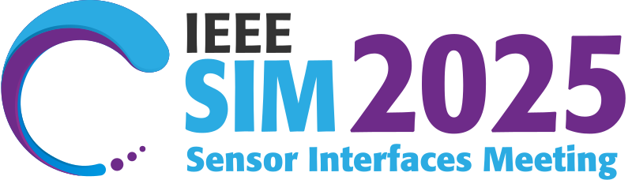
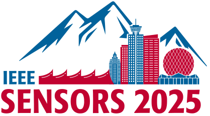
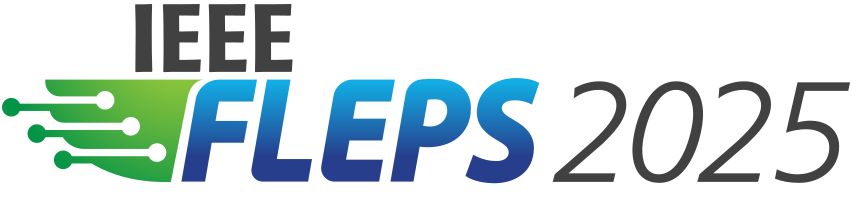

<!DOCTYPE html>
<html>
<head>
    
    <meta http-equiv="content-type" content="text/html; charset=UTF-8" />
    
        <script>
            L_NO_TOUCH = false;
            L_DISABLE_3D = false;
        </script>
    
    <style>html, body {width: 100%;height: 100%;margin: 0;padding: 0;}</style>
    <style>#map {position:absolute;top:0;bottom:0;right:0;left:0;}</style>
    <script src="https://cdn.jsdelivr.net/npm/leaflet@1.9.3/dist/leaflet.js"></script>
    <script src="https://code.jquery.com/jquery-3.7.1.min.js"></script>
    <script src="https://cdn.jsdelivr.net/npm/bootstrap@5.2.2/dist/js/bootstrap.bundle.min.js"></script>
    <script src="https://cdnjs.cloudflare.com/ajax/libs/Leaflet.awesome-markers/2.0.2/leaflet.awesome-markers.js"></script>
    <link rel="stylesheet" href="https://cdn.jsdelivr.net/npm/leaflet@1.9.3/dist/leaflet.css"/>
    <link rel="stylesheet" href="https://cdn.jsdelivr.net/npm/bootstrap@5.2.2/dist/css/bootstrap.min.css"/>
    <link rel="stylesheet" href="https://netdna.bootstrapcdn.com/bootstrap/3.0.0/css/bootstrap-glyphicons.css"/>
    <link rel="stylesheet" href="https://cdn.jsdelivr.net/npm/@fortawesome/fontawesome-free@6.2.0/css/all.min.css"/>
    <link rel="stylesheet" href="https://cdnjs.cloudflare.com/ajax/libs/Leaflet.awesome-markers/2.0.2/leaflet.awesome-markers.css"/>
    <link rel="stylesheet" href="https://cdn.jsdelivr.net/gh/python-visualization/folium/folium/templates/leaflet.awesome.rotate.min.css"/>
    
            <meta name="viewport" content="width=device-width,
                initial-scale=1.0, maximum-scale=1.0, user-scalable=no" />
            <style>
                #map_be413ae12e0f25690f38db0302da8472 {
                    position: relative;
                    width: 100.0%;
                    height: 100.0%;
                    left: 0.0%;
                    top: 0.0%;
                }
                .leaflet-container { font-size: 1rem; }
            </style>
        
    <script src="https://unpkg.com/leaflet-control-geocoder/dist/Control.Geocoder.js"></script>
    <link rel="stylesheet" href="https://unpkg.com/leaflet-control-geocoder/dist/Control.Geocoder.css"/>
    <script src="https://cdn.jsdelivr.net/npm/leaflet.fullscreen@3.0.0/Control.FullScreen.min.js"></script>
    <link rel="stylesheet" href="https://cdn.jsdelivr.net/npm/leaflet.fullscreen@3.0.0/Control.FullScreen.css"/>
<link rel="stylesheet" type="text/css" href="./emoji.css"></head>
<body>
    
    <style>.leaflet-container { height: 100% !important; }</style>
    
            <div class="folium-map" id="map_be413ae12e0f25690f38db0302da8472" ></div>
        
</body>
<script>
    
    
            var map_be413ae12e0f25690f38db0302da8472 = L.map(
                "map_be413ae12e0f25690f38db0302da8472",
                {
                    center: [40.0, 10.0],
                    crs: L.CRS.EPSG3857,
                    zoom: 2,
                    zoomControl: true,
                    preferCanvas: true,
                    lang: "en",
                }
            );

            

        
    
            var tile_layer_4e85c3c457a642d4e40577c455fa1d38 = L.tileLayer(
                "https://{s}.basemaps.cartocdn.com/light_all/{z}/{x}/{y}{r}.png",
                {"attribution": "\u0026copy; \u003ca href=\"https://www.openstreetmap.org/copyright\"\u003eOpenStreetMap\u003c/a\u003e contributors \u0026copy; \u003ca href=\"https://carto.com/attributions\"\u003eCARTO\u003c/a\u003e", "detectRetina": false, "maxNativeZoom": 20, "maxZoom": 20, "minZoom": 0, "noWrap": false, "opacity": 1, "subdomains": "abcd", "tms": false}
            );
        
    
            tile_layer_4e85c3c457a642d4e40577c455fa1d38.addTo(map_be413ae12e0f25690f38db0302da8472);
        
    
            var marker_8b765c69a3b4a2098906384a41cee2c2 = L.marker(
                [51.402895, 5.413861],
                {}
            ).addTo(map_be413ae12e0f25690f38db0302da8472);
        
    
            var icon_15e767a2e0810531b9901bdd8b2f5888 = L.AwesomeMarkers.icon(
                {"extraClasses": "fa-rotate-0", "icon": "fa-user", "iconColor": "white", "markerColor": "gray", "prefix": "fa"}
            );
            marker_8b765c69a3b4a2098906384a41cee2c2.setIcon(icon_15e767a2e0810531b9901bdd8b2f5888);
        
    
        var popup_a2ea0272009778c07dbd0f865d97cf59 = L.popup({"maxWidth": "100%"});

        
            
                var html_1f07ee5db1fa1b0e2935f67f26d2f17b = $(`<div id="html_1f07ee5db1fa1b0e2935f67f26d2f17b" style="width: 100.0%; height: 100.0%;"><a href="https://2025.ieee-sim.org" target="_blank"></a></div>`)[0];
                popup_a2ea0272009778c07dbd0f865d97cf59.setContent(html_1f07ee5db1fa1b0e2935f67f26d2f17b);
            
        

        marker_8b765c69a3b4a2098906384a41cee2c2.bindPopup(popup_a2ea0272009778c07dbd0f865d97cf59)
        ;

        
    
    
            marker_8b765c69a3b4a2098906384a41cee2c2.bindTooltip(
                `<div>
                     <div style="display: flex; align-items: center; height: 100%;"><div style="text-align: left; font-family: Trebuchet MS; font-size: 1.5em;"><b>IEEE SIM 2025</b><br>Veldhoven<br>Netherlands <span class="emoji">🇳🇱</span></div></div>
                 </div>`,
                {"sticky": true}
            );
        
    
            var marker_e526707946a6ddc6e2831c03ac17fdf6 = L.marker(
                [49.27539, -123.112766],
                {}
            ).addTo(map_be413ae12e0f25690f38db0302da8472);
        
    
            var icon_85c87a1ec9508ca23de15a41375803d1 = L.AwesomeMarkers.icon(
                {"extraClasses": "fa-rotate-0", "icon": "fa-user", "iconColor": "white", "markerColor": "gray", "prefix": "fa"}
            );
            marker_e526707946a6ddc6e2831c03ac17fdf6.setIcon(icon_85c87a1ec9508ca23de15a41375803d1);
        
    
        var popup_e1befdf14f5b7c73dae31f39698f4ff8 = L.popup({"maxWidth": "100%"});

        
            
                var html_67688218c39978cd80ba7107d389e487 = $(`<div id="html_67688218c39978cd80ba7107d389e487" style="width: 100.0%; height: 100.0%;"><a href="https://2025.ieee-sensorsconference.org" target="_blank"></a></div>`)[0];
                popup_e1befdf14f5b7c73dae31f39698f4ff8.setContent(html_67688218c39978cd80ba7107d389e487);
            
        

        marker_e526707946a6ddc6e2831c03ac17fdf6.bindPopup(popup_e1befdf14f5b7c73dae31f39698f4ff8)
        ;

        
    
    
            marker_e526707946a6ddc6e2831c03ac17fdf6.bindTooltip(
                `<div>
                     <div style="display: flex; align-items: center; height: 100%;"><div style="text-align: left; font-family: Trebuchet MS; font-size: 1.5em;"><b>IEEE Sensors 2025</b><br>Vancouver<br>Canada <span class="emoji">🇨🇦</span></div></div>
                 </div>`,
                {"sticky": true}
            );
        
    
            var marker_2d36d49a9033e58ada8509d33a214793 = L.marker(
                [1.300246, 103.770681],
                {}
            ).addTo(map_be413ae12e0f25690f38db0302da8472);
        
    
            var icon_191d97a6beef2dc449b6bda3198078c7 = L.AwesomeMarkers.icon(
                {"extraClasses": "fa-rotate-0", "icon": "fa-user", "iconColor": "white", "markerColor": "gray", "prefix": "fa"}
            );
            marker_2d36d49a9033e58ada8509d33a214793.setIcon(icon_191d97a6beef2dc449b6bda3198078c7);
        
    
        var popup_c10569bc6c66d0ed193fa1dd96bbf2fc = L.popup({"maxWidth": "100%"});

        
            
                var html_c5d8a5f28e663bfb07bf0fc77bbbd964 = $(`<div id="html_c5d8a5f28e663bfb07bf0fc77bbbd964" style="width: 100.0%; height: 100.0%;"><a href="https://2025.ieee-fleps.org" target="_blank"></a></div>`)[0];
                popup_c10569bc6c66d0ed193fa1dd96bbf2fc.setContent(html_c5d8a5f28e663bfb07bf0fc77bbbd964);
            
        

        marker_2d36d49a9033e58ada8509d33a214793.bindPopup(popup_c10569bc6c66d0ed193fa1dd96bbf2fc)
        ;

        
    
    
            marker_2d36d49a9033e58ada8509d33a214793.bindTooltip(
                `<div>
                     <div style="display: flex; align-items: center; height: 100%;"><div style="text-align: left; font-family: Trebuchet MS; font-size: 1.5em;"><b>IEEE FLEPS 2025</b><br>Singapore<br>Singapore <span class="emoji">🇸🇬</span></div></div>
                 </div>`,
                {"sticky": true}
            );
        
    
            var marker_9cc6cbdaf530752352ee7b2c1d3a99e3 = L.marker(
                [32.707996, -117.160792],
                {}
            ).addTo(map_be413ae12e0f25690f38db0302da8472);
        
    
            var icon_e8572f9d8de462c9d0278f7fc8cb4e14 = L.AwesomeMarkers.icon(
                {"extraClasses": "fa-rotate-0", "icon": "fa-user", "iconColor": "white", "markerColor": "gray", "prefix": "fa"}
            );
            marker_9cc6cbdaf530752352ee7b2c1d3a99e3.setIcon(icon_e8572f9d8de462c9d0278f7fc8cb4e14);
        
    
        var popup_2752a655333bfc4eae6eac401ce089c7 = L.popup({"maxWidth": "100%"});

        
            
                var html_eabc9833f9d25b72b98a7834f5f380b6 = $(`<div id="html_eabc9833f9d25b72b98a7834f5f380b6" style="width: 100.0%; height: 100.0%;"><a href="https://2025.ieee-biosensors.org" target="_blank"></a></div>`)[0];
                popup_2752a655333bfc4eae6eac401ce089c7.setContent(html_eabc9833f9d25b72b98a7834f5f380b6);
            
        

        marker_9cc6cbdaf530752352ee7b2c1d3a99e3.bindPopup(popup_2752a655333bfc4eae6eac401ce089c7)
        ;

        
    
    
            marker_9cc6cbdaf530752352ee7b2c1d3a99e3.bindTooltip(
                `<div>
                     <div style="display: flex; align-items: center; height: 100%;"><div style="text-align: left; font-family: Trebuchet MS; font-size: 1.5em;"><b>IEEE Biosensors 2025</b><br>San Diego<br>United States <span class="emoji">🇺🇸</span></div></div>
                 </div>`,
                {"sticky": true}
            );
        
    

            var geocoderOpts_geocoder_136c4caaf0424a7529d3f931ea763a2f = {"collapsed": false, "defaultMarkGeocode": true, "position": "topright", "provider": "nominatim", "providerOptions": {}, "zoom": 11};

            // note: geocoder name should start with lowercase
            var geocoderName_geocoder_136c4caaf0424a7529d3f931ea763a2f = geocoderOpts_geocoder_136c4caaf0424a7529d3f931ea763a2f["provider"];

            var customGeocoder_geocoder_136c4caaf0424a7529d3f931ea763a2f = L.Control.Geocoder[ geocoderName_geocoder_136c4caaf0424a7529d3f931ea763a2f ](
                geocoderOpts_geocoder_136c4caaf0424a7529d3f931ea763a2f['providerOptions']
            );
            geocoderOpts_geocoder_136c4caaf0424a7529d3f931ea763a2f["geocoder"] = customGeocoder_geocoder_136c4caaf0424a7529d3f931ea763a2f;

            L.Control.geocoder(
                geocoderOpts_geocoder_136c4caaf0424a7529d3f931ea763a2f
            ).on('markgeocode', function(e) {
                var zoom = geocoderOpts_geocoder_136c4caaf0424a7529d3f931ea763a2f['zoom'] || map_be413ae12e0f25690f38db0302da8472.getZoom();
                map_be413ae12e0f25690f38db0302da8472.setView(e.geocode.center, zoom);
            }).addTo(map_be413ae12e0f25690f38db0302da8472);

        
    
            L.control.fullscreen(
                {"forceSeparateButton": true, "position": "topright", "title": "Expand me", "titleCancel": "Exit me"}
            ).addTo(map_be413ae12e0f25690f38db0302da8472);
        
</script>
</html>